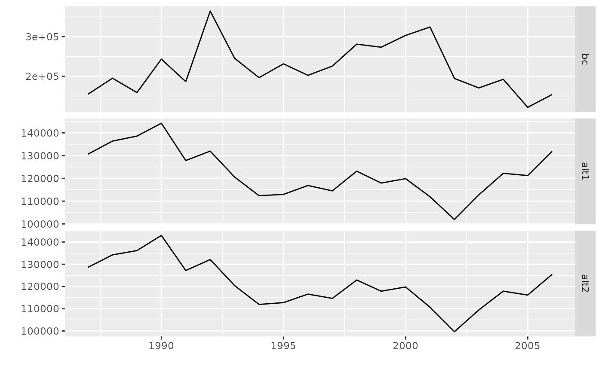

simIndices.RdFunction to generate indices of total biomass and of proportion of recruits in biomass, given information on catches at age, instantaneous rate of biomass decrease (g = M - G ) and values for the bbm parameters.
simIndices(object, ...) # S4 method for FLQuant simIndices(object, g, inits, findicesB = NULL, findicesP = NULL) # S4 method for FLStock simIndices(object, g, inits, findicesB = NULL, findicesP = NULL)
| object | An |
|---|---|
| g | A |
| inits | An |
| findicesB | A |
| findicesP | A |
A list with indices in biomass (Btot) and indices in proportion of recruits (Prec), both elements of the list are FLIndices.
Methods exist for various calculations based on the output class (FLPar). For details: ?FLPar.
bbm, FLQuant, FLQuants, FLIndices, bbmControl, FLPar, bbmFLPar
# Load data data(ane) # Case: object='FLQuant' indices1 <- simIndices( catch.ane, g=control.ane@g, inits=inits.ane, findicesB=unlist(lapply( indicesB.ane, function(x) mean(range(x)[c('startf','endf')]))), findicesP=unlist(lapply( indicesP.ane, function(x) mean(range(x)[c('startf','endf')]))) ) class(indices1)#> [1] "list"slotNames(indices1)#> NULL# Case: object='FLStock' stock <- FLStock(catch.n=catch.ane, catch.wt=catch.ane*0+1) units(stock@catch.wt) <- '' stock@catch <- quantSums(stock@catch.n*stock@catch.wt) indices2 <- simIndices( stock, g=control.ane@g, inits=inits.ane, findicesB=unlist(lapply( indicesB.ane, function(x) mean(range(x)[c('startf','endf')]))), findicesP=unlist(lapply( indicesP.ane, function(x) mean(range(x)[c('startf','endf')]))) ) class(indices2)#> [1] "list"# Run assessment with the alternative indices run <- bbm(catch.ane, indicesB=indicesB.ane, indicesP=indicesP.ane, control=control.ane, inits=inits.ane)#> outer mgc: 2.991218 #> outer mgc: 2.983554 #> outer mgc: 2.994433 #> outer mgc: 2.980339 #> outer mgc: 2.989589 #> outer mgc: 2.985185 #> outer mgc: 2.990111 #> outer mgc: 2.984663 #> outer mgc: 2.986485 #> outer mgc: 2.988286 #> outer mgc: 2.987929 #> outer mgc: 2.986843 #> outer mgc: 2.987386 #> outer mgc: 2.987386 #> outer mgc: 2.987386 #> outer mgc: 2.987386 #> outer mgc: 2.987386 #> outer mgc: 2.987386 #> outer mgc: 2.987386 #> outer mgc: 2.987386 #> outer mgc: 2.987385 #> outer mgc: 2.987387 #> outer mgc: 2.987385 #> outer mgc: 2.987387 #> outer mgc: 2.987382 #> outer mgc: 2.98739 #> outer mgc: 2.987383 #> outer mgc: 2.987388 #> outer mgc: 2.98738 #> outer mgc: 2.987392 #> outer mgc: 2.987369 #> outer mgc: 2.987403 #> outer mgc: 2.987363 #> outer mgc: 2.987409 #> outer mgc: 2.987322 #> outer mgc: 2.98745 #> outer mgc: 2.98723 #> outer mgc: 2.987541 #> outer mgc: 2.987124 #> outer mgc: 2.987647 #> outer mgc: 2.986773 #> outer mgc: 2.987998 #> outer mgc: 2.986082 #> outer mgc: 2.988689 #> outer mgc: 2.986608 #> outer mgc: 2.988164 #> outer mgc: 3.008474 #> outer mgc: 2.96631 #> outer mgc: 2.986905 #> outer mgc: 2.987863 #> outer mgc: 2.986374 #> outer mgc: 2.988397 #> outer mgc: 2.986725 #> outer mgc: 2.988047 #> outer mgc: 2.9823 #> outer mgc: 2.992471 #> outer mgc: 2.985849 #> outer mgc: 2.988921 #> outer mgc: 2.987386 #> outer mgc: 2.991218 #> outer mgc: 2.983554 #> outer mgc: 2.994433 #> outer mgc: 2.980339 #> outer mgc: 2.989589 #> outer mgc: 2.985185 #> outer mgc: 2.990111 #> outer mgc: 2.984663 #> outer mgc: 2.986485 #> outer mgc: 2.988286 #> outer mgc: 2.987929 #> outer mgc: 2.986843 #> outer mgc: 2.987386 #> outer mgc: 2.987386 #> outer mgc: 2.987386 #> outer mgc: 2.987386 #> outer mgc: 2.987386 #> outer mgc: 2.987386 #> outer mgc: 2.987386 #> outer mgc: 2.987386 #> outer mgc: 2.987385 #> outer mgc: 2.987387 #> outer mgc: 2.987385 #> outer mgc: 2.987387 #> outer mgc: 2.987382 #> outer mgc: 2.98739 #> outer mgc: 2.987383 #> outer mgc: 2.987388 #> outer mgc: 2.98738 #> outer mgc: 2.987392 #> outer mgc: 2.987369 #> outer mgc: 2.987403 #> outer mgc: 2.987363 #> outer mgc: 2.987409 #> outer mgc: 2.987322 #> outer mgc: 2.98745 #> outer mgc: 2.98723 #> outer mgc: 2.987541 #> outer mgc: 2.987124 #> outer mgc: 2.987647 #> outer mgc: 2.986773 #> outer mgc: 2.987998 #> outer mgc: 2.986082 #> outer mgc: 2.988689 #> outer mgc: 2.986608 #> outer mgc: 2.988164 #> outer mgc: 3.008474 #> outer mgc: 2.96631 #> outer mgc: 2.986905 #> outer mgc: 2.987863 #> outer mgc: 2.986374 #> outer mgc: 2.988397 #> outer mgc: 2.986725 #> outer mgc: 2.988047 #> outer mgc: 2.9823 #> outer mgc: 2.992471 #> outer mgc: 2.985849 #> outer mgc: 2.988921 #> outer mgc: 282597.9#> Warning: NaNs produced#> Warning: NaNs producedrun1 <- bbm(catch.ane, indicesB=indices1$Btot, indicesP=indices1$Prec, control=control.ane, inits=inits.ane)#> outer mgc: 492.1707 #> outer mgc: 492.1718 #> outer mgc: 492.1232 #> outer mgc: 492.2192 #> outer mgc: 492.1711 #> outer mgc: 492.1714 #> outer mgc: 492.1782 #> outer mgc: 492.1642 #> outer mgc: 492.4869 #> outer mgc: 491.8558 #> outer mgc: 492.3224 #> outer mgc: 492.0202 #> outer mgc: 492.171 #> outer mgc: 492.1714 #> outer mgc: 492.1709 #> outer mgc: 492.1716 #> outer mgc: 492.1705 #> outer mgc: 492.1719 #> outer mgc: 492.1699 #> outer mgc: 492.1725 #> outer mgc: 492.1686 #> outer mgc: 492.1738 #> outer mgc: 492.1661 #> outer mgc: 492.1764 #> outer mgc: 492.161 #> outer mgc: 492.1814 #> outer mgc: 492.1511 #> outer mgc: 492.1913 #> outer mgc: 492.1313 #> outer mgc: 492.2111 #> outer mgc: 492.0923 #> outer mgc: 492.2501 #> outer mgc: 492.0175 #> outer mgc: 492.3249 #> outer mgc: 491.8672 #> outer mgc: 492.4757 #> outer mgc: 491.573 #> outer mgc: 492.7715 #> outer mgc: 490.9861 #> outer mgc: 493.3658 #> outer mgc: 489.8463 #> outer mgc: 494.535 #> outer mgc: 436.5609 #> outer mgc: 564.4498 #> outer mgc: 506.5984 #> outer mgc: 477.7257 #> outer mgc: 497.3395 #> outer mgc: 487.0001 #> outer mgc: 494.5042 #> outer mgc: 489.8377 #> outer mgc: 493.5215 #> outer mgc: 490.8206 #> outer mgc: 492.9407 #> outer mgc: 491.4016 #> outer mgc: 494.0045 #> outer mgc: 490.338 #> outer mgc: 492.189 #> outer mgc: 492.1534 #> outer mgc: 492.1712 #> outer mgc: 492.1707 #> outer mgc: 492.1718 #> outer mgc: 492.1232 #> outer mgc: 492.2192 #> outer mgc: 492.1711 #> outer mgc: 492.1714 #> outer mgc: 492.1782 #> outer mgc: 492.1642 #> outer mgc: 492.4869 #> outer mgc: 491.8558 #> outer mgc: 492.3224 #> outer mgc: 492.0202 #> outer mgc: 492.171 #> outer mgc: 492.1714 #> outer mgc: 492.1709 #> outer mgc: 492.1716 #> outer mgc: 492.1705 #> outer mgc: 492.1719 #> outer mgc: 492.1699 #> outer mgc: 492.1725 #> outer mgc: 492.1686 #> outer mgc: 492.1738 #> outer mgc: 492.1661 #> outer mgc: 492.1764 #> outer mgc: 492.161 #> outer mgc: 492.1814 #> outer mgc: 492.1511 #> outer mgc: 492.1913 #> outer mgc: 492.1313 #> outer mgc: 492.2111 #> outer mgc: 492.0923 #> outer mgc: 492.2501 #> outer mgc: 492.0175 #> outer mgc: 492.3249 #> outer mgc: 491.8672 #> outer mgc: 492.4757 #> outer mgc: 491.573 #> outer mgc: 492.7715 #> outer mgc: 490.9861 #> outer mgc: 493.3658 #> outer mgc: 489.8463 #> outer mgc: 494.535 #> outer mgc: 436.5609 #> outer mgc: 564.4498 #> outer mgc: 506.5984 #> outer mgc: 477.7257 #> outer mgc: 497.3395 #> outer mgc: 487.0001 #> outer mgc: 494.5042 #> outer mgc: 489.8377 #> outer mgc: 493.5215 #> outer mgc: 490.8206 #> outer mgc: 492.9407 #> outer mgc: 491.4016 #> outer mgc: 494.0045 #> outer mgc: 490.338 #> outer mgc: 492.189 #> outer mgc: 492.1534 #> outer mgc: 80656.01#> Warning: NaNs produced#> Warning: NaNs producedrun2 <- bbm(catch.ane, indicesB=indices2$Btot, indicesP=indices2$Prec, control=control.ane, inits=inits.ane)#> outer mgc: 914.0208 #> outer mgc: 914.0025 #> outer mgc: 914.0214 #> outer mgc: 914.0019 #> outer mgc: 914.0135 #> outer mgc: 914.0098 #> outer mgc: 914.0125 #> outer mgc: 914.0107 #> outer mgc: 914.0408 #> outer mgc: 913.9825 #> outer mgc: 914.8812 #> outer mgc: 913.143 #> outer mgc: 914.0199 #> outer mgc: 914.0034 #> outer mgc: 914.0248 #> outer mgc: 913.9985 #> outer mgc: 914.0376 #> outer mgc: 913.9857 #> outer mgc: 914.0629 #> outer mgc: 913.9604 #> outer mgc: 914.1128 #> outer mgc: 913.9106 #> outer mgc: 957.7563 #> outer mgc: 913.8119 #> outer mgc: 914.4058 #> outer mgc: 1242.457 #> outer mgc: 1122.821 #> outer mgc: 913.2345 #> outer mgc: 927.7002 #> outer mgc: 912.4797 #> outer mgc: 917.0342 #> outer mgc: 910.9907 #> outer mgc: 919.9651 #> outer mgc: 908.0588 #> outer mgc: 925.7374 #> outer mgc: 902.2767 #> outer mgc: 1483.467 #> outer mgc: 890.8002 #> outer mgc: 959.1652 #> outer mgc: 868.5923 #> outer mgc: 1694.241 #> outer mgc: 787.7182 #> outer mgc: 981.5642 #> outer mgc: 916.9255 #> outer mgc: 828.9664 #> outer mgc: 999.1611 #> outer mgc: 883.1635 #> outer mgc: 944.8759 #> outer mgc: 899.5954 #> outer mgc: 928.4299 #> outer mgc: 905.0165 #> outer mgc: 923.009 #> outer mgc: 908.8651 #> outer mgc: 919.159 #> outer mgc: 913.8419 #> outer mgc: 914.1814 #> outer mgc: 914.0256 #> outer mgc: 913.9976 #> outer mgc: 914.0116 #> outer mgc: 914.0208 #> outer mgc: 914.0025 #> outer mgc: 914.0214 #> outer mgc: 914.0019 #> outer mgc: 914.0135 #> outer mgc: 914.0098 #> outer mgc: 914.0125 #> outer mgc: 914.0107 #> outer mgc: 914.0408 #> outer mgc: 913.9825 #> outer mgc: 914.8812 #> outer mgc: 913.143 #> outer mgc: 914.0199 #> outer mgc: 914.0034 #> outer mgc: 914.0248 #> outer mgc: 913.9985 #> outer mgc: 914.0376 #> outer mgc: 913.9857 #> outer mgc: 914.0629 #> outer mgc: 913.9604 #> outer mgc: 914.1128 #> outer mgc: 913.9106 #> outer mgc: 957.7563 #> outer mgc: 913.8119 #> outer mgc: 914.4058 #> outer mgc: 1242.457 #> outer mgc: 1122.821 #> outer mgc: 913.2345 #> outer mgc: 927.7002 #> outer mgc: 912.4797 #> outer mgc: 917.0342 #> outer mgc: 910.9907 #> outer mgc: 919.9651 #> outer mgc: 908.0588 #> outer mgc: 925.7374 #> outer mgc: 902.2767 #> outer mgc: 1483.467 #> outer mgc: 890.8002 #> outer mgc: 959.1652 #> outer mgc: 868.5923 #> outer mgc: 1694.241 #> outer mgc: 787.7182 #> outer mgc: 981.5642 #> outer mgc: 916.9255 #> outer mgc: 828.9664 #> outer mgc: 999.1611 #> outer mgc: 883.1635 #> outer mgc: 944.8759 #> outer mgc: 899.5954 #> outer mgc: 928.4299 #> outer mgc: 905.0165 #> outer mgc: 923.009 #> outer mgc: 908.8651 #> outer mgc: 919.159 #> outer mgc: 913.8419 #> outer mgc: 914.1814 #> outer mgc: 914.0256 #> outer mgc: 913.9976 #> outer mgc: 80104.1#> Warning: NaNs produced#> Warning: NaNs produced# Plot assessed populations plot( FLQuants( bc=quantSums(run@stock.bio)[,,,1,], alt1=quantSums(run1@stock.bio)[,,,1,], alt2=quantSums(run2@stock.bio)[,,,1,]))